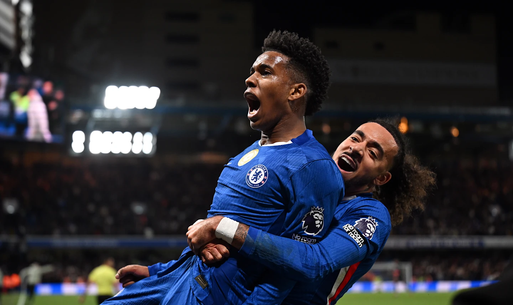
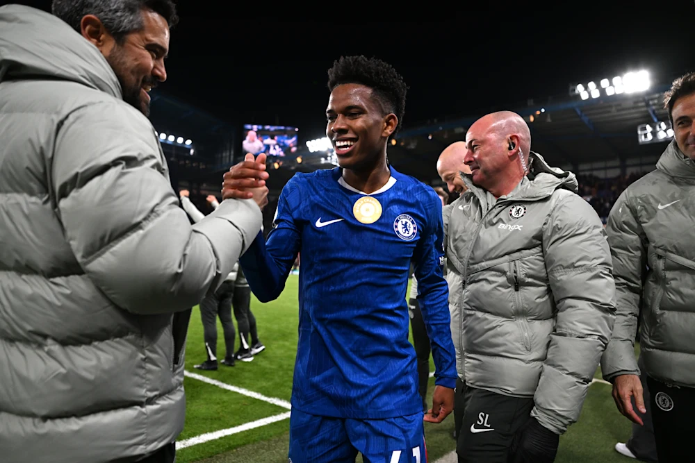

Willy Caballero mengungkapkan kegembiraan staf pelatih Chelsea terhadap Estevao Willian setelah gol pertamanya sebagai pemain Biru membantu kami mengalahkan Liverpool, dan merinci pekerjaan yang dilakukan untuk memastikan pemain Brasil itu dan beberapa rekan satu timnya terus meningkat.
Estevao bergabung dengan The Blues di musim panas dari klub Brasil Palmeiras dan telah diredakan dalam kehidupan dalam sorotan di Stamford Bridge.
Pemain berusia 18 tahun itu memulai kemenangan awal musim kami atas West Ham United dan Fulham dan juga berada di sisi tandang ke Manchester United dan di kandang Brighton & Hove Albion.
Ada penampilan pengganti, sementara itu, melawan Crystal Palace, Bayern Munich, Lincoln City, Benfica dan, tentu saja, Liverpool.
Estevao diperkenalkan dengan 15 menit untuk bermain melawan The Reds dan dengan tingkat skor 1-1. Kualitas pemain sayap itu terbukti sepanjang cameo-nya dan, pada saat-saat sekarat, ia mampu menggeser rumah pemenang kami dan merayakan gol pertamanya sebagai pemain Chelsea.
“Dia adalah anak yang sangat baik, sangat bahagia dan selalu tersenyum,” jelas Caballero, yang melakukan tugas media pasca-pertandingan setelah pelatih kepala Enzo Maresca ditunjukkan kartu kuning kedua dan kemudian merah untuk berlari di touchline untuk merayakan pemenang kami. Jadi itu selalu bagus dan kami sangat bahagia untuknya karena kami membutuhkannya dan dia melakukannya. Dia juga membutuhkan tujuannya.
Caballero kemudian merinci pendekatan yang diambil oleh pelatih dan staf pendukung The Blues untuk memastikan beberapa anggota baru dari skuad kami beradaptasi dengan kehidupan di Stamford Bridge dengan mudah.
Dia berkata: “Kami melakukan pekerjaan ini dengan banyak pemain. Banyak dari mereka masih muda dan mereka harus menghadapi peluang yang berbeda: bermain dari awal, datang dari bangku cadangan, atau berada di tribun kadang-kadang.

Estevao diberi selamat saat ia meninggalkan lapangan melawan Liverpool
“Kami tahu ini ada di sana sebagai pelatih, dan manajer adalah yang pertama yang tahu kami perlu bekerja dengan individu untuk meningkatkan, tidak hanya dengan bola tetapi di luar lapangan juga.
“Seperti dengan Estevao [melawan Liverpool], seorang pemain mungkin hanya bermain beberapa menit dalam permainan, tetapi mereka harus siap untuk tiba di sana dan mencetak gol.
“Kami tahu seorang pemain muda bisa menderita ketika mereka datang dari negara lain dan harus menetap di sini dan bermain untuk klub ini. Tapi para pemain di sini melakukan pekerjaan yang hebat.”
Kembali ke Berita